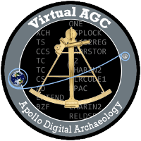
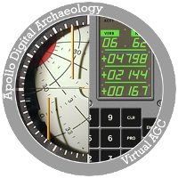
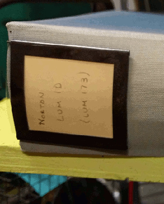
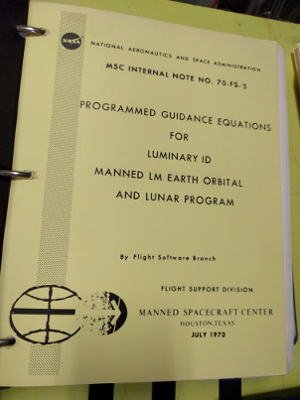

Contents
- Why Does it
Say "ibiblio" All Over these Pages, and Yet the Site URL is
"github" ... Maybe?
- Your Software Repository Is a Mess!
- What's Up With the Logo?
- Is this
site mirrored anywhere?
- Privacy concerns?
- How can I help?
- Is there a Wiki
for this project?
- Is there a forum
for this project?
- Wow, where did
you get all this material, and how can I find some too?
- I have some
of the documentation you need, but what can I do with it?
- Is this
project affiliated somehow with NASA, or Draper Labs, or TRW
Aerospace, or IBM, or ... are any former Apollo workers
involved?
- And who the
heck are you, anyway?
- Why waste
so much time on a project that may be of interest to 3 geeks
somewhere?
- Tom Hanks,
Wherever You Are, Call Me!
- What's with
the "ya" stuff all over the place?
- What's the deal with
"verbs" and "nouns"?
- Why Isn't More
Information Provided About Why the Guidance System User
Interface Was Like it Was?
- Tell Us More Amusing Stories
- I've Heard
About the Block I and Block II Systems ... Is There a Block
III Also?
- How come
the stuff the simulation can do is so trivial?
- It doesn't
work! How do I make it work?
- How do I Uninstall
this Thing?
- I'm drowning in
Alphabet Soup! What does it all mean?
- What about GitHub
Repositories?
- Are there other websites I should
look at?
- What other
media do you recommend?
- Where can I learn more
about Astrodynamics?
- Is the moon landing a
hoax?
- How can the
Virtual AGC project be contacted?
Why Does it
Say "ibiblio" All Over these Pages, and Yet the Site URL is
"github" ... Maybe?
There are several websites associated with the Virtual AGC
project:
Your Software Repository Is a Mess!
That's not a question, and nobody ever asked it. But they may
as well have, since I was noticing the other day that after 20+ years
of collecting this material it has become an enormous repository of
buried treasure. Emphasis on the "buried". I'm speaking, of course, of our GitHub repository. So let's take a very brief tour of what's in it.
First, what you see by default when you go to the link for the repository is the master
branch. The master branch is really where all of the complexity
is, so I'll get to it in a moment. But there are also a number of
alternate branches you can choose to look at. Those aren't as
complex as the master branch, so let's get those out of the way first.
- Branch: schematics.
This contains electrical schematics for the AGC, the DSKY, and various
other components of the Apollo guidance system, as transcribed for
computer-aided design (CAD). You don't get your choice of CAD
systems, though. The files are for the KiCad
system, because it's open-source and available everywhere. (I've
endeavored to make these CAD drawings as visually similar as possible to
the original schematics as humanly possible. But if you insist on
having them, scans of the original schematics are available too, but
not in the software repository; you'll find them instead on our Internet Archive site. But with 100K or so scans, it's a bit of trouble finding things there, too, so you should instead approach them via our website's Electromechanical Page.)
- Branch: mechanical.
This contains 3D models some of the Apollo guidance-system components,
particularly the DSKY, in case you feel like 3D-printing them.
- Branch: gh-pages.
This contains the master HTML files, imagery, and so on for the Virtual
AGC website, including this very page you're reading now, not including
the vast number of huge PDF files for the website's documentation
libraries. The actual website is a copy of these master files plus
the documents for the library, although you can browse the master site directly at GitHub, if you have some reason to do so.
- Branch: scenarios. This contains setups for various Apollo missions, for the NASSP add-on to the Orbiter spaceflight simulator.
- ... and many branches not likely to be of any concern to you.
As for the master branch, it contains software source code, and
lots of it. The following list isn't exhaustive, but it covers
most of the folders in the master branch.
- Original flight and development software:
- Apollo Guidance Computer (AGC) software for various missions and engineering purposes. Each version has its own separate folder, and you may need to look at our Colossus or Luminary website pages, or our document library,
to know which versions are of interest. Look in the folders with
names like these (with the * indicating a variable version
number):
- Artemis*
- Aurora*
- Borealis* (not actually original; we wrote it)
- Colossus*
- Comanche*
- Corona*
- LMY*
- LUM*
- Luminary*
- Manche*
- Retread*
- Skylark*
- Solarium*
- Sunburst*
- Sundance*
- Sundial*
- Sunrise*
- Superjob*
- Trivium*
- Validation* (not actually original; we wrote it)
- Zerlina*
- Rope-Module Dump Library: This folder contains dumps
made from AGC core-rope memory modules, rather than source code, mostly
for the AGC versions listed above.
- AGC software-development tools:
- Apollo Abort Guidance System (AGS) software. Again, each version has its own folder, with names like:
- Apollo Launch Vehicle Digital Computer (LVDC) software.
In general, you will not be able to find LVDC flight software in the
repository at present, due to ITAR-related fears. As for
non-flight software:
- PTC-ADAPT-Self-Test-Program (for the ground-test panel known as the PTC)
- Gemini:
- GeminiCatchUpandRendezvousProgram. Flight software for
the onboard computer remains unavailable. This is a Fortran II
program used for ground simulation, intermixed with some C files by me;
but I never was able to make it work
- Space Shuttle flight software (PASS, BFS): Not presently available in the repository, due to ITAR fears.
- Space Shuttle development software:
- yaShuttle/Source Code/PASS.REL32V0. A cross-compiler
(HAL/S-FC) for the HAL/S computer language, used for compiling Space
Shuttle Primary Flight Software (PFS, sometimes known as PASS).
- Modern development and simulation software, i.e., software written by or for the Virtual AGC project:
- AGC:
- Block II AGC CPU emulator: yaAGC
- Block II DSKY simulator: yaDSKY2; yaDSKY (obsolete)
- Telemetry terminal: yaTelemetry
- Physics model: yaUniverse (obsolete)
- ACA simulators: yaACA*
- Assistant for joystick (ACA) configuration: jWiz
- Block I AGC CPU emulator: yaAGCb1
- Block I DSKY simulator: yaDSKYb1
- Block I uplink transmitter: yaUplinkBlock1
- Block I AGC CPU emulator (not integrated into Virtual AGC framework): yaAGC-Block1-Pultorak
- AGC cross-assembler: yaYUL
- Python program(s) for creating generic AGC peripheral devices: piPeripheral
- GUI program for running AGC/AGS simulations: VirtualAGC
- AGS:
- AGS CPU emulator: yaAGS
- DEDA simulator: yaDEDA2; yaDEDA (obsolete)
- AGS cross-assembler: yaLEMAP
- LVDC:
- LVDC CPU emulator: yaLVDC
- LVDC cross-assembler: yaASM.py
- PTC (ground test panel) simulator: yaPanel
- Gemini:
- yaOBC. Gemini CPU emulator.
- yaASM. Gemini Onboard Computer (OBC) cross-assembler, likely not syntactically-correct for the original flight software.
- Space Shuttle:
- yaShuttle/yaHAL-S. A compiler/interpreter/emulator
(yaHAL-S-FC.py) for a partial implementation of the HAL/S computer
language.
- yaShuttle/port/PASS1.PROCS. A Python port (HAL_S_FC.py) of PASS1 of the original HAL/S cross-compiler (HAL/S-FC).
- XCOM-I. A cross-compiler for an extended form of the
XPL computer language, suitable for compiling the original HAL/S
compiler (HAL/S-FC) and related utility programs.
- XCOM-I/sim360-source/simulate. And IBM 360 simulator.
What's Up With the Logo?
If you're sharp-eyed enough, and visit here often enough, you
might notice that the logo seems to change from time to
time. Well, for many years, I exclusively used the logo
which is a common version of one of the (I guess) official NASA
Apollo patches that I simply downloaded from somewhere.
But not everybody was happy with that design, for one reason or
another, and eventually Eugene Dorr (thanks, Gene!) designed a
whole bunch of alternative patches that could be used as our
logo. Even after I had whittled the choices down to 4 and
had canvassed other folks' opinions and factored in my own
preferences, I basically couldn't figure out any clear favorite
among them. So in the end I wimped out, and the website
just cycles through the top 3 choices on a day-to-day
basis. Since this website is in the public domain, you're
free to use these designs yourself if you like (again, thanks
Gene!). Here were the top 4 candidates, and the website
uses all but the 2nd one from the left:



As I say, though, there were lots of other designs as well,
and if anybody grovels hard enough — oops, I mean "lobbies" —
I'll put them someplace for your inspection.
Is this site
mirrored anywhere?
As far as I know, not any
longer. The only mirror I knew of seems not to have been
updated since 2010.
Mirroring, of course, entails downloading of our entire website
onto your own server. But realize that just mirroring the
main website doesn't get you any of the material at our
supplemental GitHub and Internet Archive sites
mentioned earlier.
And even if you've separately made local copies of that material,
none of the hyperlinks to GitHub or The Internet Archive in your
local copy of our website will actually point to your local copies
of the GitHub or Internet Archive material anyway.
With that said, if you were to download our entire ibiblio site to
(say) a thumb drive, you could still certainly get a lot of great
offline use out of it, since other than the GitHub or Internet
Archive links, it doesn't need an active server and is designed to
be used entirely offline. (In fact, you'd have access to
almost anything you might need, except for our tens of thousands
of electrical and mechanical engineering drawings.) A tool
such as 'wget' works well for this on Linux or Mac OS X.
Just for fun, here are some of the site statistics as of
2019-05-11:
- Our main (ibiblio.org) website: 27GB.
- Our GitHub repository: 276MB
- Our Internet Archive project: 144GB
Big! Though to be fair, The Internet Archive creates a lot
of extra files in alternate formats, so we probably really only
uploaded about half of the amount quoted above.
Privacy concerns?
This website collects no data about you of any kind. It
does not send data about you anywhere. It uses no
cookies. It saves no data in your local browser's storage
area. It uses no analytics. It serves you no
ads. It seldom loads 3rd-party libraries, and of those
uses only controlled copies of the libraries. It is almost
entirely pure HTML, but does use a small amount of javascript to
make sure that the banners at the tops of the pages appear
correctly, that you can use the search engines, and that you can
hide information that's too old (if you choose to do so) on the
change-log page. In short, we couldn't care less about
you, either as an individual or a demographic, unless you want
to contact us directly and heap praises on us.
In fact, our main site is entirely stand-alone, and can operate
perfectly well if you were to download the entire website onto
(say) a USB flash drive and disconnect the internet
entirely. But it would have to be a big flash
drive.
Except ... with that said, my comments apply only to the
code I can control. There is a Google search bar
at the top of every page, for your convenience in finding
documents on this site, which admittedly can sometimes be rather
difficult otherwise. Nor (obviously) does that search bar
work without the internet. And the search bar may
(for all I know) do a lot of the junk I just said I don't
do. I'm afraid you'll have to interpret that factoid for
yourself, applying whatever degree of paranoia you are
personally feeling at the moment. Just know that if
anything untoward is being done to you, it's Google, not me!
I will tell you, though, that we derive no revenue or other
considerations from Google; the search bar is simply a free
feature that they provide, and that I think is a great
convenience for us.
How can I help?
Is there a Wiki
for this project?
If you have AGC/AGS information
you'd like to contribute, you could do so by contacting me
directly. A wiki would be a more-straightforward approach,
but in a practical sense there isn't one. (Our only wiki is
part of
our GitHub repository, and frankly its not quite good enough
to be used for our purposes.)
Is there a forum
for this project?
There
is a mailing list,
thanks for asking! On the other hand, I'm told that mailing
lists are old-fashioned, and that a newer approach would be
something like the
"Discussions"
in our Virtual AGC GitHub repository. At the moment I'm
writing this, the Discussions are completely new, so there's
admittedly no content there, and therefore if you're interested in
older content you'd probably need to consult mailing list after
all. But
new questions or topics would perhaps best
be posted as a Discussion.
As far as the mailing list specifically is concerned, if you'd
like to subscribe, changes the preferences of your existing
subscription, or unsubscribe, go to
I expect this to be a very
low-traffic mailing list, devoted to very technical questions,
if my own inbox is any indication. :-) However, as
with any mailing list, you're taking your chances. It's a
members-only mailing list, so hopefully you'll be spammed by it
only if spammers spoof the email address of existing
members. Also, there are various options you can set for
your subscription, such as concealing your email address from
the group. (I think I'd still be able to find out your
email address, since I administer the list, but you'd just have
to live with that.)
You might also want to look at Orbiter NASSP's Virtual AGC
mailing list. The discussions there seem to go into much
more technical detail than ours do.
Wow, where did
you get all this material, and how can I find some too?
If you want to collect AGC
documentation and software in a secret shrine where you can admire
it without sharing the content with anybody else, please
don't. Sometimes you can find this stuff on eBay.
There are also auctioneers who buy and sell this stuff.
Obviously, we (Virtual AGC) can't afford to buy it there or
anywhere else, but if you find yourself doing so please consider
sending us a digital copy. The value of your collectable
won't be diminished and you'd be doing a public service.
If you would like some hints about
where this kind of information lurks, click here.
I have some
of the documentation you need, but what can I do with it?
A pretty complete description of
the available options can be found on our
"how to digitize" page, but I
think that rather than frustrate yourself by reading it, just
contact me directly at the email address given at the bottom of
the page. I can advise better once I find out the nature and
extent of what you have, as well as your personal preferences and
resources.
Is this
project affiliated somehow with NASA, or Draper Labs, or TRW
Aerospace, or IBM, or ... are any former Apollo workers involved?
No, not in terms of running it or
providing any of the simulation software. We try to reach
out, from time to time, with little luck. However, in latter
years it has been gratifying to see contributions of archived AGC
documentation and program listings by various of the original AGC
developers.
And who the heck are you, anyway?
Well, I'm not involved in the space
program in any way. Professionally, I write embedded
software for airborne devices. I have a number of other
open-source projects, which you can read about (along with a
more-extended write-up about me, Me, ME!) at
my main website. But
all kidding aside, there's nothing interesting about me or my
projects except Virtual AGC.
And yes, somebody really did ask this.
Why waste
so much time on a project that may be of interest to 3 geeks
somewhere?
Placing men on the moon is one of
the greatest accomplishments of the United States of
America. It is arguable, indeed, that it is the
greatest accomplishment (of
any kind) in the history of the human race. If so, perhaps
it makes sense to preserve the relics of the Apollo project.
(Besides, I'm one of the 3. )
I got the idea while watching the movie
Apollo 13. The instant in the movie where
the AGC is powered up on Earth approach is the instant when the
viewer suddenly feels that survival of the astronauts has changed
from "highly unlikely" to "very probable". It gives me a
chill whenever I see it. Anyhow, on watching this one day,
it struck me that it was a shame nobody knew any longer how to
operate the AGC—let alone write the programs for it. (As it
happens, that thought was a bit premature: only 35 years had
passed since the AGC software was written, thus many of the
original software developers were still
reasonably young. Nevertheless, the
principle is correct, since
very
few people could use or program the AGC.)
Anyway, it then occurred to me that it would be cool to bring the
AGC back to life, and to allow anyone so inclined to use it or
program it ... assuming, of course, that sufficient publicly
information was available to do so. As it quickly turned
out, there was enough information publicly available, though
just barely enough. The
project turns out to be an interesting experiment in digital
archaeology.
News flash: I found
a couple more geeks, bringing the total to 5. Here's their
website,
where they're doing almost the same thing as me, inspired (no
less) by
From the Earth to the
Moon.
Later news flash:
I've found still more geeks. Let's just assume that the
total is around 100 and do away with these further news flashes!
Tom Hanks,
Wherever You Are, Call Me!
I jest, of course. But I
suspect that if Tom Hanks (a well-known space buff) had an
assistant make a few judicious telephone calls to people hoarding
the AGC-related information we need to advance this project, it
could accomplish more in a few hours than years of knocking on
doors by me has accomplished.
If you know someone like Tom (or know someone who knows someone
like Tom) who might be sympathetic, pass the word along to them.
What's with
the "ya" stuff all over the place?
Computer programmers are
aware—though Apollo enthusiasts may not be—that "ya" is often
added to computer program names to mean "yet another". Thus,
yaYUL is "yet another YUL", yaDSKY is "yet another DSKY", and so on.
What's the deal with
"verbs" and "nouns"?
The following amusing (if not
necessarily helpful) comment may be found in the source code of
the keyboard and display program (otherwise known as "pinball"):
THE FOLLOWING QUOTATION IS PROVIDED THROUGH THE
COURTESY OF THE AUTHORS.
"IT WILL BE PROVED TO THY FACE THAT THOU HAST MEN
ABOUT THEE THAT
USUALLY TALK OF A NOUN AND A
VERB, AND SUCH ABOMINABLE WORDS AS NO
CHRISTIAN EAR CAN ENDURE TO
HEAR."
HENRY 6, ACT 2, SCENE 4
It turns out, though, that the authors' literary skills didn't
quite match their programming skills, as this quote is really from
Henry VI, Part 2, Act IV, Scene VII. (Thanks to Frank
O'Brien of the Apollo Flight Journal and Apollo Lunar Surface
Journal for this correction.) By the way, if you take it
upon yourself to actually read the play to figure out the context,
you may find yourself reading about "a Nowne and a Verbe" rather
than "a noun and a verb".
Original AGC hardware developer Ramón Alonso provides a little
more insight: Apparently, nobody had yet arrived at any kind
of software requirements for the AGC's user interface when the
desire arose within the Instrumentation Laboratory to set up a
demo guidance-computer unit with which to impress visitors to the
lab. Of course, this demo would have to do something, if it was going
to be at all impressive, and to do something it would need some
software. In short order, some of the coders threw together a demo
program, inventing and using the verb/noun user-interface concept
(in the whimsical fashion seen in much of this code), but without
any idea that the verb/noun concept would somehow survive into the
flight software. As time passed, and more and more people
became familiar with the demo, nobody got around to inventing an
improvement for the user interface, so the coders simply built it
into the flight software without any specific requirements to do
so.
However, that does not mean that the verb/noun interface was
universally beloved. Ramón says that many objections were received
from naysayers, such as "it's not scientific", "it's not
dignified", or even "astronauts won't understand it". Even
though the coders of the demo hadn't seriously intended the
verb/noun interface to be used in any permanent way, it became a
kind of devilish game to counter these objections with (perhaps)
sophistic arguments as to why the interface was really a good
one. In the end, the coders won. I don't know whether
they were elated or dismayed by this victory.
The astronauts, of course, could
understand the interface, but they did not like it. Most of
them really wanted an interface much more like that they had used
in aircraft: i.e., lots of dials and switches. Dave
Scott is the the only astronaut I'm aware of who had kind words
for it (or for the AGC in general), though we are told that Jim
McDivitt wasn't necessary completely hostile to it.
Why Isn't More
Information Provided About Why the Guidance System User Interface
Was Like it Was?
A lot of thought about usability
went into the design of the guidance system, much more so than the
story above about verbs and nouns would indicate. Questions
like what kinds of controls needed to be provided, or even where those controls would be
physically located, were extremely important (Thanks to
George Silver for pointing this out.) Sadly, I don't know
anything about these topics, and that's why I don't cover them
here.
Tell Us More Amusing Stories
Well ... maybe just a couple more.
- The story of the 1201 and 1202 alarms on the descent by
Armstrong and Aldrin to the lunar surface during Apollo 11 is
well known. (If you don't know it, the astronauts
received repeated alarms from the AGC of type 1201 and 1202 --
5 alarms in all, if I'm not mistaken. On each alarm, the
question was raised as to whether to continue or to
abort. Obviously, they continued.) I'm informed
that the representative from the MIT Instrumentation Lab who
was present to be consulted by Mission Control was Russ
Larson. When consulted on the go/no-go question, Larson
simply gave a "thumbs up" signal. When asked years later
why he had done this, he said simply that he was too scared to
speak. (Thanks to Allan Klumpp for this story.)
- And continuing on the topic of the 1201/1202 alarms in
Apollo 11: These alarms were caused by the fact that
during the landing, both the landing radar and the rendezvous radar
were turned on. Only the landing radar actually needed
to be active, but it was felt by some that having the
rendezvous radar turned on would be useful in case of a sudden
abort. What wasn't known was that this extra load on the
AGC CPU would cause it to run out of processing cycles.
The software would work all right at first, but eventually the
loss of about 15% of the CPU cycles due to processing the
excess radar data would cause some tasks to be spawned before
earlier instances of those tasks had completed running.
Eventually, because of the duplication of tasks, the software
would be unable to allocate the memory needed to spawn new
tasks, and would need to restart. Fortunately, the
cunning design of the software allowed the software to
basically continue executing at the same point where it had
been before restarting, and so it could continue operating
normally until it ran out of memory again. Eldon Hall
likes to point out that this is a success of the AGC rather than a failure (as
some other people
like to say). At any rate, Allan Klumpp coded a
workaround for this problem in time for the Apollo 13 mission,
but the powers-that-be declined to use the new software.
Klumpp was upset enough about this to contact the mission
commander, Jim Lovell, and describe why the new software
(Luminary 131) would be so much better than the old. The
next morning, Dick Battin dropped by Klumpp's office and
announced, "Allan Klumpp, your political savoire-faire has
descended to a new low!" That was his way of saying that
Luminary 131 would be used on Apollo 13 after all, because Jim
Lovell wanted it.
- The original source code for the AGC assembler program
called "YUL" is available here.
Examine (say) pages 2 and 3 carefully. I needn't
comment further.
- Not an AGC story, but I like it: I'm told that
one of the perks of writing software at MSC (Manned Spacecraft
Center, now Johnson Space Center) in the Apollo era was
taking the coding sheets to the 'swamp' for the keypunch
operators to build the card decks to be taken to the computer
center. The 'swamp' was a tiered auditorium with many
young women at keypunch machines on the tiers. Of
course, the young engineers would enter the room at the front
at what was the focus of the tiers, feeling a little like a
bull at the rodeo auction. Apparently, this was a good
way to meet bored young women in need of stimulation.
This is a case, obviously, where progress has been in
completely the wrong direction. (Thanks to Paul Schlein
for this story.)
- When the disks containing the Apollo 11 assembly listings
arrived (May 2009) arrived at my office, the shipping clerk
who handed the box to me asked if it contained a software
update. I informed him that it did. That it was a
very old software update ... in fact, perhaps the oldest
software update in the history of the world. And you
know what? I think it may actually be true.
- This one is not quite so amusing ... to me! Perhaps
bittersweet is the proper word. As you have noticed from
reading our Luminary or Colossus pages, or from various
other comments, I (we) are rather fanatical about finding all
of the versions of the AGC software we can, so as to fill in
all of the blanks and be able to tell you the complete story
of AGC software development from end to end. Mostly this
involves trying to find AGC developers and Museums/Archives
that have such software listings in their possession, and then
shamelessly begging. However during the Apollo era, MIT
Instrumentation Lab employees weren't the only people who
routinely had these program listings. Another group that
had them was the Flight Procedures Branch of the flight Crew
Support Division at the Manned Spacecraft Center (MSC) in
Houston. One member of that group, Clark Neily, had the
following to say in response to my questioning on the matter:
At least some of them were subtitled with the
following Latin motto:
Quod non videt oculus, cor non dolet.
Does anyone among you remember this charming grace
note, and who was responsible? Being the only New
Englander in that part of MSC, and thus familiar with the
native institutions here, I strongly suspected that the
presence of this item in the listings was an unsubtle
indication that at least one member of the IL development
team had graduated from someplace like Amherst College (my
dad's alma mater) rather than MIT.
To answer your question [about other MSC members having kept
copies of AGC listings as souvenirs], just about all of our
inventory went over the side at the end of Apollo. I
remember in particular a huge stack of listings in the
hallway with a sign above saying "Free data, take one''.
- Regarding the "free data, take one"
AGC story above, an LVDC developer
told me a similar story upon hearing my complaints about a
lack of LVDC documentation and software:
IBM-FSD [IBM Federal Systems
Division, which developed the LVDC] happened to build a HUGE
fancy building in 1987 (approximately). In the
early 1990’s, NASA had one of their periodic funding
cutbacks and reorganizations. Independently, IBM was
downsizing and sold FSD to a corporation that began massive
layouts. Because of the double-whammy, the “new”
building was effectively vacated. I drove past it
almost every day and observed massive amounts of
documentation being discarded. A temporary ramp was
built from the upper floors to ground-level. Documents
were then shoveled from open window-areas to a lower-level
dumpster. That ramp stayed in place for several
months.
That is likely one of the reasons why material is difficult
to find.
Yikes! (Or if you prefer, Yipes!)
- AGC developer Peter Volante has passed along some pictures
of a cardboard-cutout toy that Gulf Oil gave out back in
1969. It forms a model of a LM, which Peter (good for
him!) still calls a LEM. Surprisingly, at least in 2017,
you can still get these through eBay, at a not-too-outrageous
price. I ordered mine right away! (Unfortunately,
now that it has arrived, pristine and unspoiled by human hands
in its plastic wrapper, I'm uncertain whether I should
actually build it or not. Why does nothing ever turn out
like we plan?)
- AGC developer Steve Copps tells this story about a Flight
Software Readiness Review (FSRR):
A group of MIT engineers attended the Apollo 7 FSRR
and made presentations, myself included. Bell Labs and TRW
along with the various NASA Branches involved also made
presentations. The presentations went very well and
everything pointed to a GO for flight. After the
presentations were completed various members of the head
table (there were probably 50 people in the room,) in turn
expressed their opinion based on the presentations and
other information. When it got to the crew, backup CSM
pilot Dave Scott spoke for the prime crew as they were at
the Cape doing simulations. He said that in effect the
prime crew had asked him to report that they ”had no
confidence in the flight software”. You could have heard a
pin drop and of course the MIT contingent was in shock.
The meeting chairman, Chris Kraft, asked what they meant
and asked if they were ready to fly. Dave replied
immediately that yes they were ready to go. Kraft said, in
so many words, that if they were ready to fly then he
didn’t understand what they were saying. He then said if
they weren’t ready he would replace them that minute. He
then declared the software ready for flight.
That was an unbelievable moment and it made clear
the command of Chris Kraft.
- AGC developer Peter Volante contributes this story about a
different Flight Software Readiness Review (FSRR), slightly
edited. The story also happens to be about Steve Copps
(see above), though Steve disavows any memory of the incident:
There is another story involving Steve that I recall
from the Apollo 11 Flight Software Readiness Review (FSRR)
The FSRR was a big deal; all the contractors involved in
producing and testing the AGC software (Grumman , TRW, the
Lab and others) had to make presentations and vouch that
the software was ready for the mission. It took place in a
big auditorium at MSC. I was sitting with Joe Saponaro and
Gene Muller. George Cherry was introducing the Lab's
presentation of the test results that demonstrated that
the LEM software was capable of performing the mission
under various conditions that might be encountered. When
George came to the Lunar Orbit Rendezvous phase, he
presented a single slide showing the test results for
Rendezvous Navigation. There were a number of test cases
reflecting different possible mission scenarios; the only
ones I remember are one sigma and three sigma IMU errors.
For each test case, George's slide showed the miss
distance at closest approach, which was the figure of
merit used to evaluate system performance. Now the amount
of effort to get those results was substantial. I had
worked closely with Gene and Pete Kachmar, with Joe
supervising and helping out, for many weeks to produce all
the data. And George had taken the heart of Gene's
presentation (each mission phase, Descent, Ascent,
Rendezvous, etc. was presented by the responsible
engineer). So Gene was cringing while Joe and I were
trying not to laugh.
When George finished talking about the slide there
was a momentary silence. Then a voice was heard asking a
question. It was Steve. "George," he said, I notice that
the three sigma IMU error case is better than the one
sigma IMU error case"; that is, the miss distance with
three sigma IMU errors was smaller than the miss with one
sigma errors. George didn't know how to respond; he wasn't
all that familiar with the testing. He could have said
something about offsetting errors, but he didn't. "Well,"
Steve continued, "do you think that's the way we should
go?" George didn't answer and the room was silent — Steve
had just suggested that it might be better to fly the
mission with an inertial system with three sigma errors.
What could anyone say?
George was bright and enthusiastic, and made
an indelible impression on everyone who worked with him.
- AGC developer Fred Martin contributes this story, though it
perhaps needs a little explanation. The software in the
AGC was partitioned up into a series of "major modes" that
were numbered with 2-digit numbers, such as P00, P01, P02,
etc. In particular, P00 is the "fresh start" program, the
entry point, and isn't something you would normally use whilst
in the midst of normal operations.
While we're reminiscing I thought I'd relate the P00
story. It was beautiful clear Sunday afternoon, Dec. 29,
1968, and the Apollo 8 was on its way home. I had just
deposited my family at Logan for their visit to NJ and I
then went to the lab to be "on duty." Dan [Lickly],
Margaret [Hamilton] and I were in the 2nd floor conference
room reading and listening to the astronaut/Houston
chatter when Jim Lovell said "Oh oh, I think I just did
something wrong." The voice from Houston was calm when
asking what he did. "I selected P00 on the keyboard. Did I
do something?" "We'll get back to you." A microsecond
later the phone rang from Houston wanting to know what the
hell he did and what effect it had. We didn't know and
said we'd get back as soon as we could. Who ever tested
selecting POO coasting home after TEI [Trans-Earth
Injection]? Nobody! We discussed the problem and what the
effects might be and Dan and Margaret tore in to the
listing to follow the thread of events. The crew had been
taking star sightings and building their navigation base.
The phone again ...."Well what have you come up with?
We've got to know quickly. If the computer is out and we
lose communications we've lost the crew. We need an answer
now." "We're doing the best we can, we'll get back to
you." The 8 inch listing was on the table and we pored
over it. It was taking time. Another phone call .... more
time. Finally, after about 90 minutes the detective work
yielded the result. Jim had wiped out, from erasable
[memory], all the navigation data that he had been
collecting via the sextant. While the astronauts had
multi-communication channels to Mission Control, the fact
is that they would be in trouble with a loss of
communications and no navigational information. We
conveyed our conclusion to a very impatient Houston and
then we heard the calm Houston voice say, "Jim, on that
P00 we'll just up-link some data to you. Everything is
OK." After that it was just a beautiful restful Sunday
afternoon. No problems.
- And speaking of P00, a dirty little secret that you may be
able to deduce from the story above if you are an extremely
keen observer is that P00 (pee zero zero) was generally
referred to in the AGC source code as POO (pee oh
oh) or sometimes POOH (as in Winnie the Pooh).
Now, it's not documented whether POOH is actually an
allusion to Winnie the Pooh, or perhaps to something else, but
one of my favorite program comments in the AGC source code
(appearing in many different versions of the code in one form
or another) is the following:
DO NOT USE ENEMA WITHOUT CONSULTING POOH PEOPLE
which is not only good advice in the AGC, but for life in
general. It probably helps to know that ENEMA
is the software function that flushes waiting programs from
the system during a software restart.
A number of stories revolve around the remarkable technical
exploits, and equally remarkable quirkiness, of the late John
Norton of TRW. Though not an AGC coder himself, he had an
important effect on the AGC coding process. Here's what the
late Jack Garman had to say about him in an interview, in
reference to the Apollo 14 mishap with the LM's
intermittently-activating abort switch:
A fellow named John Norton, he’d be a good one
to get hold of if you ever can, TRW in those days. I don’t
know where he is now. He was a genius. Like many geniuses, he
had trouble communicating with management, okay, but in the
computer game, he was a genius. TRW had many roles in those
days, but part of it was continuous independent assessment of
what was going on. John’s task was to look at all the onboard
software code and do what is today called code inspections.
It’s a normal part of testing. It wasn’t done in those days,
except that John Norton did it.
The way he’d do it is, he’d take this awful assembly language
and translate it back into his own version of a readable
higher order language. The Norton Document, as we called it,
that he put out for every version of every program, all typed
by hand—no word processing in those days—was our Bible. We
actually used it the same way somebody might use a Fortran
listing or higher order language listing of a program to
analyze their program.
As soon as this happened, we opened up our Norton Documents
and started looking for flag bits, remember, hard-coded stuff.
The first thing we determined was that the minute the engine
lit, the minute it lit, it would be shut down and it would
abort, because that’s the way the computer was programmed and
that’s hard code. It would assume that the crew just—first it
cycles and reads it environment every two seconds, including
all the switches, and it would read the switch and say, “Oh,
time to abort. I’ll do exactly what I’m told,” and separate
the descent part of the vehicle and ascent and fire right back
into the command module. No, we don’t want to do that.
Tracking down these "Norton Documents" is a bit tricky.
There's a notion floating around that the "Programmed Guidance
Equations" documents (like
this one for
LUMINARY 1B), are the Norton Documents, even though
textually they purport to have been written entirely by MSC's
Flight Software Branch, and barely mention TRW at all (let alone
John Norton). However, they do correspond vaguely to
Garman's description of them. The only hard support I'm
aware of for this theory is the writing on the spine of this
document in Don Eyles's collection:
 
Is it a Norton Document? You decide. We don't yet have
a scan of it, unfortunately, for reasons which escape me.
But sometimes one had to have a bit of fun with John. Here's
a story that AGC developer Steve Copps tells:
There seems to be some interest in this so I’ll
do my best to remember back through the years. It occurred in
1967 I believe.
I was responsible for the crew interface to the CSM guidance
system and strived to put together a perfect GSOP IV [Guidance
System Operations Plan, section 4] for Apollo 7. After a
thorough review and sign-off at the lab I sent the document to
NASA Houston as a deliverable. I remember being proud of the
product and more or less thought of it as my baby... I was
young. Imagine the shock when within 24 hours after they
received it we got a multipage memo written by John Norton
(with the usual disclaimers) and delivered through John
Williams, Jack Garman's boss. I couldn’t believe it. I must
have seen it as a challenge or something because I decided
that if John Norton could find all those faults in a day then
I could fix them in a day. So I went at it, punching the IBM
cards myself and submitting run after run. Around 5 in
the morning I was finished and had incorporated the comments
which were pretty much valid but for the most part were not
substantive.
After proofing it as best I could I decided that it would be
fun to tease John a bit and insert a little comment which I
assumed would take him days to find, and would make him laugh
if he ever did find it. In the middle of P52 I wrote in tiny
letters the words “Norton needs glasses”.
I quickly received the approvals I needed (without telling of
the little bomb I had inserted) and sent it off to Houston
early with someone who was flying down. So it was in John
William’s office that day. Within hours after receiving it
Norton found the entry and hit the ceiling, raising hell all
over the Center. The phones were ringing off the hooks; it
seems everyone weighed in. I was told that Norton wanted the
one who wrote it fired and he wanted MIT removed from the
program. I, of course, was called to task and got to speak to
a lot of people during the next few days.
I was reprimanded by both my own management and by NASA
management but in all cases with a wink and smile.
AGC developer Peter Volante confirms that he saw the phrase
mentioned above, "Norton needs glasses" in a Guidance Systems
Operations Plan (GSOP) document. He went on to say that a
copy of that GSOP should be placed in the Smithsonian or some
other museum, because the story demonstrates that a sense of humor
is a valuable asset when working on a large program under intense
pressure.
And speaking of Peter, here's my transcription of a memo he sent
me, which Norton had apparently fired off to Jack Garman in 1971,
in response to some later hiccup:
Subject: "Norton is Working With
Us"
I received a call this morning from a John van Ecckel, whom
Monroe identified as somebody in "crew coordination".
He said that he had been talking to C. Thomas about the
Users' Guide Material.
He said that he had talked to R. Larson of MIT, and Larson
had informed him that "Norton has been working with us the
past couple of weeks on updating the Users' Guide."
With the millions of dollars that you give to MIT, it seems
to me that they should be able to produce documents on their
own, rather than having to drag my name into their excuses
to NASA as to why the document is lousy. As Mr. Larson
craftily planned, the documents I was permitted to see had
no page numbers and had to be returned, so I have absolutely
no proof of whether or not some particular butch in the crew
version was or was not in the version I saw. I do
have proof of the Rev. 1 comments that MSC ignored in Rev.
2, but MIT still has their millions and I still have the
post-midnight hours. As I told you yesterday, I've
been working for 6 years on Apollo, and NASA doesn't have
much to show for it. I hope you sleep well.
Personally, I laughed and laughed when I read this, so I naturally
raised the question as to whether John had, perhaps, been making a
little joke when he wrote this. I was told "I wouldn't say
John had a sense of humor. That message was not a
joke." I don't know, though; does anyone really say
"craftily" unless they're trying to be funny?
And speakings of the millions of dollars NASA was giving to MIT
(as opposed to John Norton, I suppose), here is an amusing aside
about Norton from MSC's Clark Neily:
Norton was under contract to
my group at MSC in Flight Procedures Branch of the Flight Crew
Support Division. He was quite a phenomenon. He would have a
detailed report in our office the day after the release. His
reports and the flow charts were used to assure that the
part-task procedures simulators were functionally identical to
the LGC software, even though [the simulators were] programmed
in FORTRAN IV (extended). Also I understand [he] drove TRW HR
crazy because he didn't cash his pay checks for months at a
time. I once stood behind him at the Clear Lake Savings and
Trust and he had a sheaf of them in his hand...
I've Heard
About the Block I and Block II Systems ... Is There a Block III
Also?
No, never was, and never will be ... and
you
can read all about it at this link.
How come
the stuff the simulation can do is so trivial?
It takes more than just a computer
to fly an Apollo LM or CM. At the very least, you need
simulations of the spacecraft's IMU, AOT, and of the physical
spacecraft (i.e., acceleration, torque, fuel usage, etc.).
Maybe we'll have those things, one of these days. The
LM-Simulator
module has made a good start towards providing some of these
things.
It doesn't
work! How do I make it work?
Troubleshooting
Running
the Simulation
Various things to to look out for
are found in the
quirks
list, but here's a separate, supplemental list just to make
it even more confusing:
- If you're running the simulation by separately running yaAGC and yaDSKY rather than through
the VirtualAGC GUI,
remember that the two programs have to be run from two different
command-line windows. A reason why you might want to do this is that on
some slow Win32 systems, there are some timing problems if the
startup scripts are used.
- VirtualAGC enforces a
certain ordering in the way the various components of the
simulation start up. If you bypass VirtualAGC, you should note
that there some are some quirks in the startup and shutdown
ordering of yaAGC and yaDSKY. If you don't stick to my
recommended ordering, you will probably encounter
problems. In Win32:
You
can't start peripherals before you start yaAGC; if you do, the
programs will not be able to communicate amongst
themselves. In Linux
(pre-20050131): You can't terminate yaAGC before terminating
peripherals; if you do, there will be a timeout (which may be a
minute or two) before the operating system allows the port
connecting the simulated CPU and peripherals to be reused.
(In Win32, command "netstat
-a" --- or in Linux, the command "netstat -a | grep 19697"
--- is useful for detecting this condition.) The
startup/shutdown procedure I'd recommend for both platforms is:
- Start yaAGC.
- Start all peripherals (like yaDSKY).
- Use to your heart's content.
- Stop all peripherals (like yaDSKY).
- Stop yaAGC.
- Startup of the LM-Simulator
component, which is written in the Tcl/Tk scripting language,
has always been problematic: If it doesn't connect within
a certain limited time, it will abort, and if the simulation is
being run from the VirtualAGC
GUI it will generally cause the entire simulation to
abort. One thing that seems to help is to delay startup of
LM-Simulator for several
seconds, to insure that yaAGC
is up and waiting for connections before LM-Simulator even tries to
connect.
- The main place (I think/hope) where things could go wrong
would be in the TCP socket interface connecting yaAGC and yaDSKY. If some other
service on your computer was already using port 19697—if, for
example, you were simultaneously running two copies of yaAGC or yaDSKY—then there could be a
problem. You can check this by closing out all instances
of yaAGC and yaDKSY (in Win32 with
ctrl-alt-del, or in Linux with "killall -KILL yaDSKY" and "killall -KILL yaAGC"),
and then trying this: "telnet localhost 19697". If telnet
says it connected to something, then you definitely have another
service using this port, and you can work around it with the
--port command-line switch of yaAGC
and yaDSKY to choose a
new port. If not, then you probably don't, and that's not
the cause of your problem.
- Another possibility, I suppose, is that you may have a
personal firewall installed which is blocking port 19697.
In that case, you'll have to reconfigure the firewall.
- Perhaps your computer is not even set up properly for
networking, which is necessary for any of the socket-based
communications to work. For example, you may not have an
Ethernet card. These comments
from Joe Durnavich (thanks Joe!) may help if you have this
problem and you're using Linux.
How do I Uninstall
this Thing?
On Linux or Windows, an uninstaller
program is provided when the installer program is run.
Alternately—if installed on Mac OS X or from source code—simply
remove the installation directories which were created.
Unless you've renamed them, these will be folders with names like
"yaAGC/" (dev snapshot), "VirtualAGC/" (Linux binaries), "Virtual
AGC\" (Windows binaries), or "VirtualAGC.app/" (Mac OS X binaries.
On very old versions, in Linux or Mac OS X, the installation
directory might have been "~/.yaAGC".
I'm drowning in
Alphabet Soup! What does it all mean?
ACA
|
Attitude Controller
Assembler---the LM's hand-controller for pitch/roll/yaw
adjustments.
|
AEA
|
Abort Electronics Assembly.
|
AGC
|
Apollo Guidance Computer
|
AGS
|
Abort Guidance System---a
separate computer aboard the Lunar Module
|
AOT
|
Alignment Optical
Telescope. Telescope used to make star
sightings. By monitoring the orientation of the
telescope, the AGC could compute the orientation of the
spacecraft and use this information to calibrate the IMU
(see below).
|
CM
|
The Command Module---i.e.,
the capsule.
|
CMC
|
Command Module
Computer---i.e., the AGC in the CM.
|
CSM
|
The combined Command and
Service Modules.
|
G&N
|
Guidance and Navigation
|
GNCS
|
CM G&N Control
System---i.e, the AGC plus G&N measurement and control
devices.
|
IMU
|
Inertial Measurement
Unit. This a stable platform (i.e., retains its
orientation with respect to the fixed stars rather than to
the spacecraft) containing accelerometers. By
monitoring the accelerometers and the orientation of the
platform with respect to the spacecraft, the AGC can compute
the orientation of the spacecraft, as well as its position,
velocity, and acceleration.
|
LGC
|
Lunar Guidance
Computer---i.e., the AGC in the LM.
|
LM
|
The Lunar Module---i.e., the
lunar lander.
|
LVDA
|
Launch Vehicle Data Adapter
|
LVDC
|
Launch Vehicle Digital
Computer
|
PGNCS
|
("Pings".) The LM
Primary G&N Control System---i.e, the AGC plus G&N
measurement and control devices.
|
What about GitHub
Repositories?
Around mid-2016, Chris Garry's Apollo 11 source-code repository
got a lot of press, and I ended up getting some mail from
journalists and what-not in regard to it. I wasn't
involved with it, but it was a clone of the Apollo 11 AGC
source-code files here at Virtual AGC. There was a brief
flurry of activity at his repository, in which various typos in
the text of the program comments for that code were corrected
more quickly than here at Virtual AGC, though I doubt that
that's the case any longer, since we ended up correcting
literally thousands of such errors in our own Apollo 11 source
code. Regardless, the attendant publicity worked out well
in our favor, and I suspect that it indirectly resulted in us
getting various material offered to us which we've been quite
happy to get, from folks who might not have heard of us
otherwise. At any rate, if that sounds interesting to you,
check it out!
As it happens, Chris is neither the first nor the last to clone
some or all of Virtual AGC (all of which is allowed and
perfectly fine, of course!), and you'll find a number of them at
GitHub. Though perhaps Chris was unique in discarding
everything that wasn't directly related to Apollo 11. I'm
not certain what most of the other clones are for.
Until early in 2016, our own subversion-based source-code
repository had resided at Google Code for about 10 years.
However, that earlier repository at Google
Code no longer exists other than in archival form, since
Google Code ceased its normal operations, and was migrated to
GitHub. Just for clarification, our (Virtual AGC's)
official GitHub repository is
Accept no substitutes!
Are there other websites I should
look at?
A non-AGC, non-Apollo, non-NASA site
you might enjoy (hint: it's about Vostok and Soyuz) is
the Vostok Supersite.
Here are some folks who have done wacky stuff with the AGC
(including, of course, our AGC simulation), generating lots and
lots of media coverage in the process:
- An anonymous programmer has modified the AGC Comanche 55 software
— i.e., the Command Module's AGC software for Apollo — to
solve the "Dodge the Lasers" problem for Google's Foo.Bar
Coding Challenge ... which is not something I had previously
heard of, apparently because the Foo.Bar Coding Challenge is
secret and by invitation only. But
here's a write-up of it I found online. At any
rate, our anonymous benefactor has provided his/her modified
Comanche code in a
GitHub repository, from which you can compile it and run
it; the repository includes instructions, as well as a bit of
a write-up of the Dodge the Lasers problem itself. Plus,
there's an
instructional video.
- Ken Shirriff, a member of the AGC
restoration team, has
written some bitcoin-mining code for the AGC, and
provided his code for it as well (though you have to dig a bit
to find his GitHub link to it).
- David Given has created an "Ada-inspired
language for very small systems (6502, Z80, etc.) called
Cowgol. As a lark, he
has chosen to port this language to the AGC, as well as
writing a lunar lander game (Cowlark) for it. In
other words, you build the Cowlark game using a Cowgol
"cross-compiler" on your PC, producing an AGC rope-image of
the game software. When you run this rope in our AGC
simulation — or on a physical AGC if you happen to have one
laying around — you have a lunar lander game that runs on the
LM's own computer!
There are lots of online sites with worthy Apollo-related
resources, though not necessarily specializing in the AGC.
Some terrific ones are listed below, in no particular order.
- Tindallgrams.net.
This is a delightful site devoted entirely to making available
the many, many memos written by Bill Tindall,
colloquially known as "Tindallgrams". The memos are quite
fun now (50 years later), and chock full of useful information,
though I'm sure that at the time there was a lot of hair-pulling
associated with them.
- De
la
Terre à la Lune. This site is in French, but you
don't have to speak the language to admire that amazing
Apollo-related graphics and videos presented there.
- history.nasa.gov.
Many valuable Apollo technical drawings and other
references. The following links were particularly valuable
for me:
- www.apollosaturn.com.
Lots
of useful miscellaneous info, including spacecraft photos.
- www.jsc.nasa.gov/history.
This
site doesn't contain any actual materials of interest to Virtual
AGC, as far as I can tell, but it's very useful in figuring out
where existing records from Apollo are physically located.
- "Tales from
the Lunar Module Guidance Computer", transcript of a
terrific talk by Don Eyles, covering the infamous Apollo 11 1202
alarms, the Apollo 14 solder-ball incident, and more.
- And last, but not least, the Apollo Lunar Surface
Journal and Apollo
Flight
Journal(s). But I imagine that anybody who has
managed to find their way here already knows all about them
anyhow.
Here are sites of some folks who
are doing pretty much the same kind of stuff as I am:
Realistic full-feature LM and/or CM
simulations:
Tools used in developing for
Virtual AGC. This list isn't really up-to-date, but
I suppose it might be of value to somebody. Maybe!
Modern Linux distributions typically provide all of the tools
needed, if not in a default installation at least in the
distribution's package system for painless download. Win32,
in contrast, provides none
of them. (Hey, folks, they're free. It wouldn't cost
Microsoft anything to provide them.) Mac OS X is somewhere
in between.
Tool
|
Linux
|
Win32
|
Mac OS X
|
UNIX & BSD
|
GNU gcc, make, etc.
|
Provided automatically by almost all Linux distributions.
|
www.mingw.org |
Apple
developer CD, or download from www.apple.com.
|
Often
provided automatically. Note that although GNU tools
are assumed (www.gnu.org),
native tools may work also.
|
wxWidgets cross-platform GUI
toolkit for building VirtualAGC,
yaDSKY2, yaDEDA2, and yaACA2.
|
Provided automatically by many Linux distributions.
Otherwise, download from www.wxwidgets.org |
Download from www.wxwidgets.org |
Provided in Mac OS X 10.5, but you may need to
update. The version provided in Mac OS X 10.4 is too
early, so download from www.wxwidgets.org |
If not provided, download from www.wxwidgets.org |
gtk+cross-platform GUI
toolkit for building yaDSKY and yaDEDA.
No longer needed for the yaDSKY2
and yaDEDA2
programs that have superceded yaDSKY and yaDEDA!
|
Provided automatically by many Linux
distributions. Otherwise, download from www.gtk.org |
www.gtk.org |
Install using fink |
Sometimes provided
automatically. Otherwise, download from www.gtk.org |
Optional gladeGUI builder forgtk+.
No longer needed for the yaDSKY2
and yaDEDA2
programs that have superceded yaDSKY and yaDEDA! |
Provided automatically by many Linux
distributions. Otherwise, download from glade.gnome.org |
glade.gnome.org |
(Don't know.)
|
Sometimes provided
automatically. Otherwise, download from glade.gnome.org |
Thread
library.
|
(Not
needed.)
|
POSIX
Threads for Win32 |
(Not
needed.)
|
(Not
needed.)
|
Allegrocross-platform GUI
toolkit for building yaACA.
No longer needed for the yaACA2
program that has superceded yaACA! |
Provided automatically by some Linux
distributions. Otherwise, download from alleg.sourceforge.net |
alleg.sourceforge.net |
alleg.sourceforge.net |
May be provided automatically.
Otherwise, download from alleg.sourceforge.net |
bzip2 for unpacking
development snapshots.
|
(Not
needed.) |
sources.redhat.com/bzip2/ |
(Not
needed.) |
(Not
needed.) |
tar for unpacking
development snapshots.
|
(Not
needed.) |
www.gnu.org/software/tar/tar.html |
(Not
needed.) |
(Not
needed.) |
Tcl/Tk scripting language for LM_Simulator.
|
www.tcl.tk/
|
What other
media do you recommend?
Podcasts
I recommend these podcasts because some of them feature me
talking about Virtual AGC, so how bad could they be? (Don't
answer that! Unfortunately, I know the answer already.)
- The
Orbital Mechanics, "Hugh Blair-Smith", October 11, 2016
- The London Podcast,
"Apollo 50 & Lunar London", July 20, 2019.
- The
Orbital Mechanics, "Ron Burkey", July 23, 2019.
- Well ... not a podcast, but rather a
video presentation I gave about the Virtual AGC Project
for the Software Heritage's SWHAP Days conference in October
2022. Fifteen minutes is nowhere near enough time for that
if you're as verbose as I am — had you noticed? — so I put a lot
of effort into cutting out content and making it as entertaining
as I could; how well I succeeded is a matter of opinion. I
hope. Do select the 1080p resolution than the default (on
my computer, anyway) 360p resolution. In case you don't
know, Software Heritage
concerns itself with software preservation, and hence that's
what I focused my talk on. The other conference
presentations and the separate Q&A can also be found at the
same YouTube link.
Magazine
- "Moonshot
Computing" by Brian Hayes, American Scientist
magazine, volume 107, number 3. An article primarily
about the AGC, containing amusing things such as the author
stepping through some of the code himself. Plus Virtual
AGC gets a mention, which is always good.
- "Houston,
We
Have a Program — Rescuing the Computer Code that Flew Us to
the Moon" by Chris Bourn, Delayed Gratification
Magazine, issue #24. The focus of the article is the
Virtual AGC project, rather than the AGC itself, and (from my
standpoint) is a lot of fun. The magazine is interesting
itself is also quite interesting, aside from this article, in
that it is a print-only (no ads) magazine from the U.K., devoted
to what is called "slow journalism" — i.e., to when journalism
was journalism rather than just a vast swath of blog entries
that have been cobbled together in an hour or so. However,
the magazine does put a few of their print articles online, and
that has happened (at least for the moment) with this article,
so I can give a link to it. Chris has also written another
fun article, this time about the
relationship
of story-telling to computer programming, in which the
Virtual AGC project appears.
- "BURN,
BABY!
BURN!" by Keith Collins, at Quartz.
- "Don
Eyles:
Extra! Weird-Looking Freak Saves Apollo 14!", by Timothy
Crouse, Rolling Stone Magazine, March 18, 1971.
Books
- SUNBURST
and LUMINARY, an Apollo Memoir, by Don Eyles.
Go buy it right now!
- Left
Brains for the Right Stuff: Computers, Space, and History,
by Hugh Blair-Smith. A terrific book, not to be missed!
- The Apollo Guidance Computer:
Architecture and Operation, by Frank
O'Brien. Chichester, UK: Springer/Praxis Publishing,
2010. The title says it all. I think you'll find
this to be a very readable book, somewhat like a much kinder,
gentler form of this website in terms of the material
presented. Conversely, some of the material on this
website came from Frank originally, so I guess what goes around
comes around. Good job, Frank!
- Journey to the Moon: The
History of the Apollo Guidance Computer, by Eldon
Hall. Reston, Virginia: American Institute of
Aeronautics and Astronautics, 1996. If you're at all
interested in the stuff on my website, buy this book and read
it. It's much more technical than you probably imagine
from the title. I have an autographed copy, purchased from
the author. The sign on the table read, roughly, "Signed
by the author -- $50. Unsigned -- $55." (And no,
that's not a misprint. Either price was a bargain compared
to amazon.com, so I cleverly bid it up to $60.) Also, you
should read Hugh Blair-Smith's annotations to
the book.
- Moonbit,
by James E. Dobson and Rena J. Mosteirin. This a book of
(and about) "erasure
poetry" based on the AGC software.
- This New Ocean, by
William E. Burrows. New York: Random House,
1998. A very comprehensive and seemingly authoritative
history of the space program up to 1998.
- Carrying the Fire: An
Astronaut's Journeys, by Michael Collins. New
York: Copper Square Press, 1974. Very funny.
- Deke! U.S. Manned
Space: From Mercury to the Shuttle, by Donald K. "Deke"
Slayton with Michael Cassutt. New York: Forge, 1994.
- The Last Man on the Moon,
by Eugene Cernan and Don Davis. New York: St.
Martin's Griffin, 1999.
- A Man on the Moon, by
Andrew Chaikin. New York: Penguin Putnam,
1994. Upon which From
the Earth to the Moon (see below) is partially based.
- Moon Lander: How We
Developed the Apollo Lunar Module, by Thomas J.
Kelly. Washington: Smithsonian Institution Press,
2001.
- Flight: My Life in
Mission Control, by Chris Kraft and James
Schefter. Penguin Putnam, 2001.
- Failure is Not an Option,
by Gene Kranz. Berkley Books, 2000.
Video
- A reader (thanks, Frank Kannemann!) has pointed out this short
online
lecture, "1969 Moon Landing: The Code of the Apollo 11
Guidance Computer (AGC)" which seems to cover a lot of the
same topics we deal with on this website. See
also this link. I say "seems to" because I've not
actually watched it since I wanted neither to pay the site's
subscription fee nor to avail myself of their free trial.
If anyone watches it and wants to offer me their opinion, let me
know!
- Apollo 11, CNN Films, 2019.
- Apollo 13, Universal
Studios, 1995.
- From the Earth to the Moon,
HBO Home Video, 1998.
- The Dish, Warner Bros, 2001.
- Spacecraft Films
has a series of DVD-sets containing the films, television
transmissions, still photos, and numerous other materials for
various missions---Apollo 8, 11, 15, 16, and 17 as of this
writing. I've seen the Apollo 11 and Apollo 15 sets, and
would recommend them for enthusiasts (but not for the friends
and families of enthusiasts). The Gemini films, on the
other hand, seem extremely compelling. One reader, Eugene
Dorr, writes with rave reviews about a video called "Mission to
the Moon", which is a 2-DVD set of documentaries; the star of
the show (he tells us) is a half-hour film called "Computer for
Apollo", which includes a demonstration of the AGC, as well as
"a totally engrossing demonstration of how the AGC was
manufactured." I guess I should go an buy it myself, right
now!
- In the Shadow of the Moon
is a terrific documentary by David Sington on the various lunar
missions, consisting principally of interview material with a
large number of Apollo astronauts. It doesn't really have
anything to do with the AGC, but I'd recommend it highly anyway.
- The
AGC (and other) episodes of the Science Channel series
"Moon Machines". This has lately also become available on
DVD.
Where can I learn
more about Astrodynamics?
One reader, Charles Pique, has made the following observation:
Looking over the AGC project there doesn’t seem to be a short
course in astrodynamics or any theoretical explanation of what
is going on at the detailed level. If anyone wants to
learn astrodynamics from scratch they can contact me.
Looking over his résumé, I find that Charles has degrees in
physics and electrical engineering, has worked at places such as
Martin Marietta (Shuttle ground systems) and Boeing Hunstville
(Space Station), and has been an adjunct professor at the
University of Charleston (West Virginia) and West Virginia State
University. You can email him at wvphysicist at
outlook dot com.
Charles also points out that MIT has posted online course
materials, including lecture notes, from a
course that Richard Battin gave on this very subject in 2008.
The posting doesn't have enough information in it to
unambiguously say whether or not this is the same Richard
Battin from the original team at the MIT Instrumentation
Laboratory that developed the AGC, but it's my supposition that
it was.
Thanks, Charles!
Is the moon landing a
hoax?
Yes, though I've removed all
references to the hoax from the
Luminary
and
Colossus source
code. (Joke!)
But seriously, I've found the blog of some thinker who has used
the existence of our Virtual AGC project itself as
evidence that the moon
landing was faked. His reasoning goes as follows: a)
Virtual AGC simulates some Apollo hardware; b) therefore, it is
possible to simulate Apollo
missions; and c) therefore Apollo missions
were fake 40 years ago.
Well, you hardly need Virtual AGC as a step in that reasoning,
since lots of people already know that the astronauts trained
extensively in simulated spacecraft. The simulators being
used in the 1960s and 70s were far better and more accurate than
our 21st-century software-only simulations.
Amusingly to me, the Virtual AGC project has
also been used as a
counter-argument to those who believe in the hoax theory, so I
guess the pluses and minuses of our project, hoax-wise, tend to
balance out. I quite like
a YouTube
video in which a Microsoft Windows based compilation of our
AGC assembler (
yaYUL) is
performed, and then
yaYUL
is used to assemble one of the
Luminary
or
Colossus
programs. Too bad the demonstration stops short of actually
running the simulated system. The video is well worth
watching, but I'm merely giving the link for it rather than
embedding the video itself within in this page, because there is
an audio track that might startle those around you if you happened
to be reading this page while on a break at your workplace.
Anyway, a claim had been made that
Luminary and
Colossus
were not real programs, or something of that sort, and the demo
video is supposed to debunk that by showing the the programs not
only exist as scanned program listings, but can also be
assembled. Naturally, this was not very conclusive as far as
the believer whose argument being debunked was concerned.
A case in point is the
the
extraordinarily
detailed argument given at this link, which (at least at
this moment) includes
the
totality of our own page describing the AGC programming
language(s) in a nice, scrolling box, which is flattering in
a way. Good thing I recently removed the copyright of
our site and placed the entire content in the public domain, so as
to keep usage like that on the legal up-and-up! What I take
to be the first paragraph of the argument reads
"I am
a professional computer engineer, I have known the
microprocessor from its start. I have had the
curiosity of having a look at the Apollo guidance computer
which has been made public. I have read the operator's
manual documentation, and it's really the weirdest I have
ever seen, so weird that it makes my hair raise on my head
when I read it (and I have read many technical
documentations). The program of the CM is very weird too; I
strongly doubt it piloted anything; it could not even be
compiled, that is transformed into machine code to be
executed."
I admit
that I haven't read most of the rest of the argument — the fact
that it says in the very first paragraph that the AGC software
can't be assembled (even though our project provides an assembler
that assembles it) and that it couldn't possibly pilot anything
(even though the folks over at NASSP do so regularly) causes my
suspension of disbelief about the argument to be crumble — but it
is very, very detailed, and uses some resources I've never seen
before, so you may be interested in taking a look. Most of
the argument seems to be that the AGC is "weird", a fact which I'm
happy to grant, but has no bearing on anything else. The
weirdness might cause the hair on my head to stand up too, if I
had any left. But an aardvark or a kangaroo is weird
too. So what? They still exist.
Nor, as it happens, are assemblers for AGC code all that uncommon,
and mine (yaYUL) is not the only one, nor even necessarily the
best, by any means. I found out recently that quite a few of
my collaborators on this project have
also written AGC
assemblers, such as one called JaYUL, for their own personal
edification. One of them told me something like, Ron, don't
you know that eventually
everyone writes an AGC
assembler? I didn't, but it's good to know! Of course,
at this site we now also provide the
original YUL
assembler used by the Instrumentation Lab until it was superceded
by a replacement assembler called GAP. Admittedly, we have
no way to actually run YUL without having a Honeywell 800/1800
computer or a simulation thereof, so perhaps it doesn't really
work; I suppose that pro-hoaxers can take comfort in that ... for
the moment.
How can the
Virtual AGC project be contacted?
This page is available under the Creative
Commons
No Rights Reserved License
Last modified by Ronald Burkey on
2024-07-03.


{kind=link}
{kind=link}
{kind=link}
{kind=link}